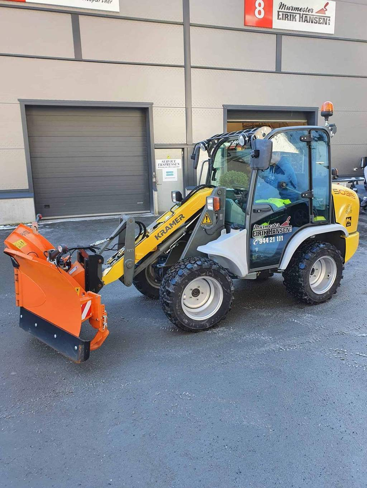
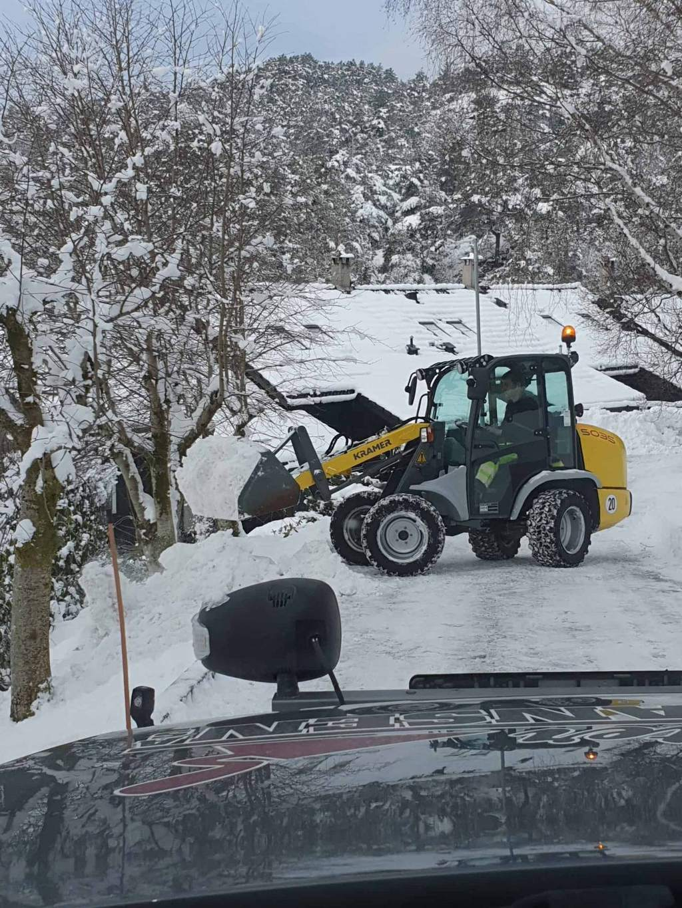

Prosjekter
Ferdige jobber, fra Nesttun til Åsane.
Et utvalg prosjekter. Noen er store, noen er bare fine — felles for dem er at de er gjort ferdig, med dokumentasjon.



Vinteren
Når det snør, står vi opp.
Et næringsbygg uten brøytet inngang er et bygg uten kunder. Vi tar rammeavtaler på vintervedlikehold, med tydelige rutiner for hvem som ringer hvem — og hva som skjer når snøen kommer klokka fire om natten.
Vi bruker egne maskiner og har folk som kjenner anleggene. Det betyr at vi kan rykke ut på kort varsel, også når alle andre har kø.
